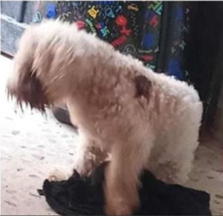
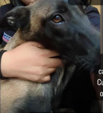

Ayúdanos a encontrarlos
Perdido desde: 06/10/2023
Perdido desde: 10/10/2023
Perdido desde: 09/09/2023

Billy
- Sin cola
- Lesión en el lomo
RECOMPENSA
Perdido desde: 25/10/2023
Perdido desde: 19/10/2023

Rocky
- Color café y negro
- Pastor belga
RECOMPENSA
Perdido desde: 26/10/2023
Hachi
- Collar azul
- Cola esponjada
RECOMPENSA
Perdido desde: 08/09/2023
Perdido desde: 24/10/2023
Bonita
- Pechera rosa
- Correa colgando
RECOMPENSA
Perdido desde: 14/10/2023
Nina
- Color blanco
- Café en el lomo
RECOMPENSA
Perdido desde: 02/10/2023
Perdido desde: 26/09/2023
Miu
- Pelaje moteado
- Ojos color amarillo
RECOMPENSA
Perdido desde: 20/09/2023
Perdido desde: 5/18/2024
Rayas
- Amigable
- Rayas grises y negras
RECOMPENSA